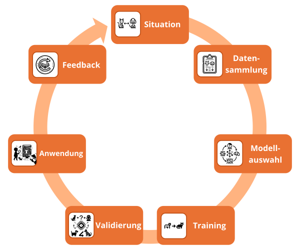

Maschinelles vs. Menschliches Lernen
Menschliches und Maschinelles Lernen
Stellen wir uns vor, ein Kind sieht zum ersten Mal einen Hund. Das Kind ist fasziniert von diesem neuen Tier und ruft begeistert "Wauwau!". In seiner kindlichen Begeisterung bezeichnet es zunächst jeden Vierbeiner als "Wauwau". Erst nach und nach lernt es durch Beobachtung und mit Hilfe seiner Eltern, die feinen Unterschiede zwischen verschiedenen Tieren wie Hunden und Katzen zu erkennen.
Dieser Prozess der Erkundung und Anpassung findet sich auch beim Maschinellen Lernen wieder. Computerprogramme lernen aus Beispielen, ohne explizit programmiert zu sein. Am Anfang kennen sie die feinen Unterschiede zwischen verschiedenen Kategorien noch nicht. Durch das Analysieren großer Mengen von Daten (das "Training") lernen sie nach und nach, Muster zu erkennen und Daten korrekt einzuordnen.
Für uns war es sinnvoll, den gesamten Prozess als Kreislauf von insgesamt sieben Schritten darzustellen. Wir haben uns für diese Darstellung entschieden, um menschliches und Maschinelles Lernen gegenüberzustellen. Für Prozesse, die ausschließlich auf Maschinellem Lernen basieren, findet man in der Literatur verschiedene Darstellungen. Nachfolgend findest du eine schematische Darstellung des maschinellen Lernprozesses. Wichtig ist, dass der Lernprozess nach einem Durchlauf nicht abgeschlossen ist, sondern in mehreren Schleifen erfolgt. Auch das ist eine Gemeinsamkeit zwischen dem menschlichen und dem Maschinellen Lernen.

Nehmen wir zur Erläuterung des gesamten Lernprozesses ein konkretes Beispiel: Eine KI-Anwendung soll lernen, Bilder von Hunden und Katzen zu unterscheiden.
Situation
Bei Kindern ist die Ausgangssituation für den Beginn eines Lernprozesses nicht so explizit wie in einem KI-Projekt, sondern eher durch eine intrinsische Motivation ausgelöst oder durch einen von der Umwelt stimulierten Lernanreiz. Kinder sind neugierig und wollen die Welt um sich herum verstehen. In unserem konkreten Beispiel möchte ein Kind lernen, die Unterschiede zwischen einem Hund und einer Katze zu erkennen. Generalisiert übertragen auf die KI heißt das, dass sie Bilder klassifizieren soll.
Datensammlung
In der realen Welt sieht das Kind viele verschiedene Hunde und Katzen. Es erkennt Tiere, wenn sie 4 Beine und einen Schwanz haben und sagt dann "Wauwau". Die Eltern helfen dem Kind, indem sie auf die Tiere zeigen und diese benennen. So verbindet das Kind die Bilder und Laute der Tiere mit den richtigen Begriffen.
Für die KI werden Tausende Bilder von Hunden und Katzen gesammelt und entsprechend gekennzeichnet. Diese Daten müssen eventuell bereinigt werden, um Fehler oder irrelevante Informationen zu entfernen.
Modellauswahl
Im Kopf des Kindes bilden sich durch Wiederholung und Korrektur feste neuronale Verbindungen, was zu einer klareren Unterscheidung zwischen Hunden und Katzen führt. Dieser Prozess ist ähnlich der Art und Weise, wie ein neuronales Netz (vgl. 3.2) im KI-Training gestärkt wird. Es ist besonders geschickt darin, in unstrukturierten Daten Muster zu erkennen und aus diesen zu lernen.
Mit jedem durchlaufenen Trainingsbild verbessert das KI-Modell seine Erkennungsfähigkeit für charakteristische Merkmale wie die Beschaffenheit des Fells, die Form der Ohren und die Beschaffenheit des Schwanzes. Es optimiert seine Vorhersagegenauigkeit, indem es relevante Muster hervorhebt und weniger wichtige vernachlässigt. Diese schrittweise Verfeinerung seiner Erkennungsleistung gleicht dem Lernprozess eines Kindes, das durch ständiges Ausprobieren und die daraus resultierenden Korrekturen lernt.
Training
Das Kind lernt durch Wiederholung und Rückmeldung der Eltern. Wenn es einen Hund als Katze bezeichnet, wird es korrigiert. So verfeinert das Kind mit jeder Korrektur sein inneres Modell.
In der KI gibt es zwei grundlegende Arten des Trainings:
- Beim überwachten Lernen (Supervised Learning) bekommt das Modell zu allen Trainingsdaten die korrekte Klassifikation. Anhand dieser Labels lernt es die relevanten Merkmale. In diese Lernkategorie gehören auch Künstliche neuronale Netze.
- Beim unüberwachten Lernen (Unsupervised Learning) erhält das Modell nur die Daten ohne Labels. Es muss selbst Ähnlichkeiten erkennen und die Daten gruppieren. So entdeckt es eigenständig Muster und Strukturen. Das unüberwachte Lernen kann als ergänzende Methode beim Training eingesetzt werden, um dem Modell noch tiefergehenderes Verständnis zu ermöglichen. Es hilft dem Modell, latente Merkmale und Zusammenhänge zwischen den Daten zu erfassen, die durch das überwachte Lernen allein möglicherweise nicht erfasst werden könnten.
Die Ergänzung bzw. die Kombination von Künstlichen neuronalen Netzen mit dem überwachten Lernen nennt man Deep Learning, was als Begriff auch häufig in der KI-Diskussion auftaucht.
Ergänzend zu den genannten Verfahren existiert das verstärkende Lernen (Reinforcement Learning)), bei dem ein Modell seine Entscheidungen anhand von Belohnungen und Bestrafungen optimiert. Dieses Verfahren betont den iterativen Charakter des Lernens und verdeutlicht, wie kontinuierliche Rückmeldung – wie im Beispiel des Rennfahrens und Gamings (vgl. Video ab Minute 7:40) – zu einer stetigen Verbesserung führt.
So wie ein Kind durch Wiederholung und Korrektur seine Unterscheidungsfähigkeit verbessert, optimiert das KI-Modell seine Leistung iterativ durch viele Trainingsdurchläufe und Anpassungen. Nach genügend Training kann es dann auch neue Daten zuverlässig klassifizieren.
Validierung
Ähnlich wie ein Kind lernen muss, Hunde und Katzen in neuen Situationen richtig zu erkennen, muss ein KI-Modell beweisen, dass es in der Lage ist, Daten zu generalisieren und es nicht nur auswendig gelernt hat. Dazu werden neue Testdaten verwendet, um die Fähigkeit des Modells zur korrekten Klassifikation zu überprüfen. Wenn die Ergebnisse unzureichend sind, muss das Modell verbessert werden, um die zugrunde liegenden Regeln zu verstehen und nicht nur einzelne Merkmale auswendig zu lernen. So wie Eltern ein Kind herausfordern und bei Bedarf korrigieren, hilft die Validierung dabei, das KI-Modell zu testen und zu verbessern. Dieses Konzept ist entscheidend beim Maschinellen Lernen und ermöglicht es dem Modell, seine Leistung kontinuierlich zu verbessern.
Anwendung
Nach dem Training kann das KI-Modell sein gelerntes Wissen anwenden, ähnlich wie ein Kind sein Wissen nutzt, um neue Tiere draußen korrekt zu erkennen und zu benennen. Das trainierte Modell kann in verschiedenen Anwendungen eingesetzt werden, wie z.B. einer Bildanalyse-App oder einem Empfehlungssystem. Es wendet sein gelerntes Wissen auf neue Daten an und ermöglicht es, nützliche Aufgaben zu lösen. Genau wie ein Kind verschiedene Tiere erkennt und dieses Wissen praktisch anwendet, findet ein trainiertes KI-Modell Anwendung in realen Systemen.
Feedback
Regelmäßiges Feedback ist für das Kind unerlässlich, um zu lernen und sich weiterzuentwickeln. So wird es beispielsweise durch Spiele, die die Unterscheidung von Farben und Formen fördern, oder durch interaktive Bildungstools, die spielerisch Wissen vermitteln, weiter gefordert und unterstützt. Gleiches gilt für ein KI-Modell, das durch die kontinuierliche Analyse von Nutzerinteraktionen in einer Foto-Sortier-App oder durch die Einbeziehung neuer, vielfältiger Bilddatensätze stetig verfeinert wird. Ein Kind lernt durch den Besuch eines Zoos oder durch das Blättern in einem Tierbuch neue Tierarten kennenlernt und sein Wissen vertieft. Genauso erweitert das KI-Modell seine Erkennungsfähigkeiten durch die Einführung zusätzlicher, unterschiedlicher Bilder oder durch Feedback von Benutzer*innen, die Fehlklassifikationen melden. Diese fortlaufende Interaktion, sei es durch menschliche Rückmeldung oder durch neue Dateninputs, ermöglicht es dem Modell, adaptiv zu bleiben und sich an die sich wandelnde Welt anzupassen.
Reflexionsfragen
Welche Meinung hast du selbst zu folgenden Punkten, die im Zusammenhang mit der weiteren Entwicklung des Maschinellen Lernens diskutiert werden? Welche Zukunftsaspekte stimmen Dich skeptisch, welchen stehst du eher positiv gegenüber, wenn sie so eintreffen? Glaubst du an diese Potenziale?
- Lernprozesse und Anpassungsfähigkeit: Maschinelle Lernmodelle werden in der Lage sein, nicht nur die Komplexität menschlicher Lernprozesse nachzubilden, sondern sich auch an neue Situationen anzupassen, indem sie emotionale und soziale Kontexte integrieren und flexibel auf Veränderungen reagieren.
- Generalisierung und Transferlernen: Fortschritte im Maschinellen Lernen werden es Systemen ermöglichen, mit minimalen Datenmengen zu generalisieren und Wissen über verschiedene Domänen hinweg zu transferieren, ähnlich der menschlichen Kapazität, aus wenigen Beispielen zu lernen und Erkenntnisse in unterschiedlichen Kontexten anzuwenden.
- Autonome Motivation und kontextuelles Verständnis: Zukünftige maschinelle Lernmodelle werden ein tiefes Verständnis für Kontext und Nuancen erlangen und eine eigene Form der "Motivation" entwickeln, was sie in die Lage versetzen wird, kontextbewusst und autonom zu handeln.
- Interaktives Lernen und kontinuierliche Verbesserung: Durch die Integration von interaktiven und sozialen Feedbackmechanismen werden maschinelle Lernsysteme eine Lernerfahrung bieten, die kontinuierliche Verbesserungen ermöglichen und der menschlichen Lernerfahrung ähnelt.